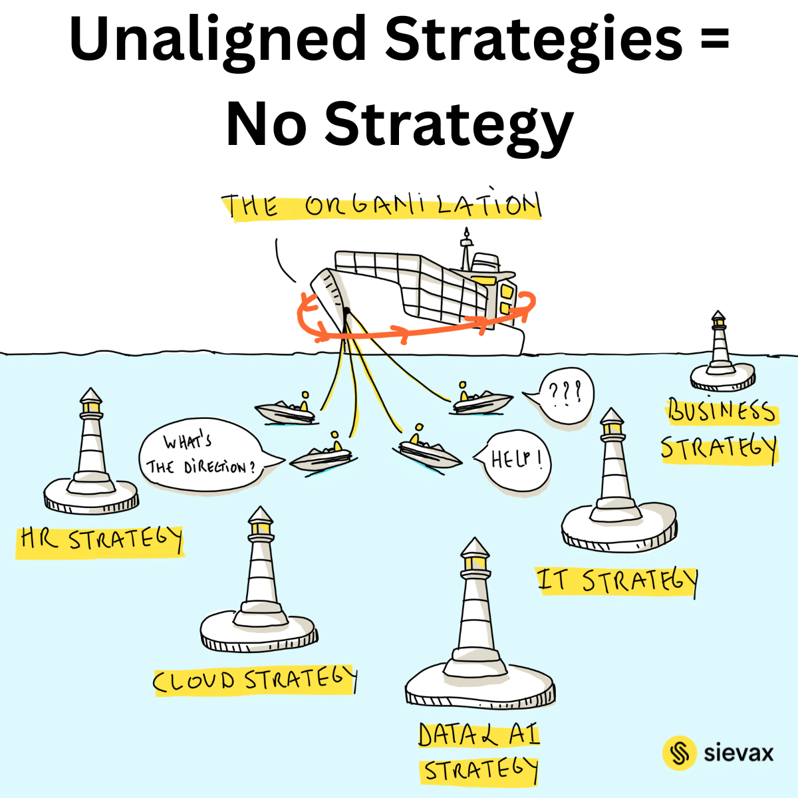
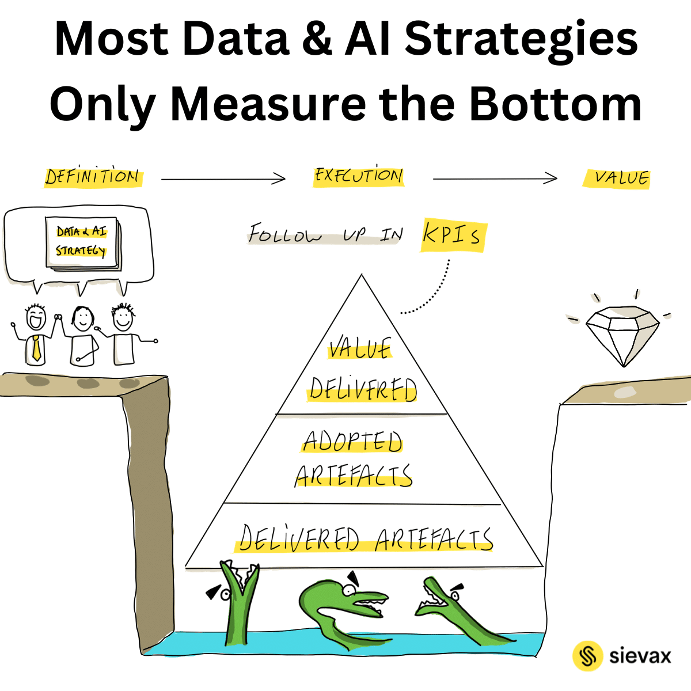

AI is everywhere.
Fluency isn't.
A live, cohort-based academy for the leaders building real Data & AI strategy — ensuring your investments deliver business value, not just technical outputs. Most of the work is people, process and organization. Only a fraction is the tech.
Everyone has the tools. Almost no one has the strategy.
Most organizations have already bought the AI. They have the licenses, the pilots, the enthusiasm. And still nothing changes — because the hard part was never the technology.
The hard part is alignment, ownership, data foundations, change resistance, and people who don't yet know how to work differently. That's the 80% nobody trains for.

Built for the people who make AI land
This is for you
You're a data leader, CDO, architect, consultant or transformation lead responsible for making AI actually land in your organization — not just demo well. You've seen pilots stall. You want a strategy that survives contact with reality.
This isn't for you
If you're looking for a hands-on model-training or coding bootcamp, this isn't it. The academy is about strategy and organizational readiness — not building the models yourself.

What you'll walk away with
A Data & AI strategy you can defend to your board.
A clear operating model: who owns what, and how decisions get made.
A framework to assess and build organizational AI readiness.
The change-management playbook to move people from resistance to adoption.
A method to prioritize use cases by impact, not hype.
A peer network of leaders facing the same challenges.
How the cohort works
Live online sessions over six weeks, capped at 20 participants so every voice is in the room. Each bar shows the same truth: a sliver of tech, a lot of everything else.
A decade of turning ambition into results
I'm Jan Meskens — I've spent over a decade helping organizations turn Data & AI ambitions into outcomes, drawing from my own experiences guiding leaders through real transformations. I hold a PhD in Human-Computer Interaction, lecture at university level, and deliver keynotes and masterclasses across Europe. This academy distills everything I teach in the room into a format you can join from anywhere in the world.
Reserve your seat →Two minutes on why this academy exists
Jan explains what the cohort covers, who it's for, and the thinking behind the 80/20 — in his own words.
Strategy that survived reality
Jan cut through months of stalled debate in two sessions. We left with a strategy the board actually approved.
The 80/20 framing changed how our whole leadership team talks about AI.
Finally a program about the organisational reality, not another tool demo.
Claim one of 20 seats
Investment
invoiced to you or your organization
Cohort details
- StartsAnnounced soon
- Duration6 weeks
- Seats20 — kept small on purpose
- WhereOnline, live
- LanguageEnglish
- CertificateOn completion
Request your seat
A few details is all we need. We'll reply within one business day.
Thanks — you're on the list.
We'll email you within one business day.
Not ready to apply? Book a 30-min call with Jan first →
Good to know before you apply
What language is the program in?+
English, so participants can join from anywhere in the world.
Do I need a technical background?+
No. This is a strategy and leadership program, not a coding course. You'll work on the organizational side of Data & AI.
What if I miss a live session?+
Every live session is recorded, so you can catch up without losing your place in the cohort.
What timezone are the sessions in?+
Central European Time (CET) — chosen to stay workable across Europe. Recordings cover the rest.
Is there a certificate?+
Yes — you receive a certificate of completion at the end of the cohort.
Can my employer pay?+
Yes. We invoice organizations directly, and many participants expense the program.
Ready to build a strategy that actually lands?
Only 20 seats · Next cohort starts — announced soon
Join the next cohort →